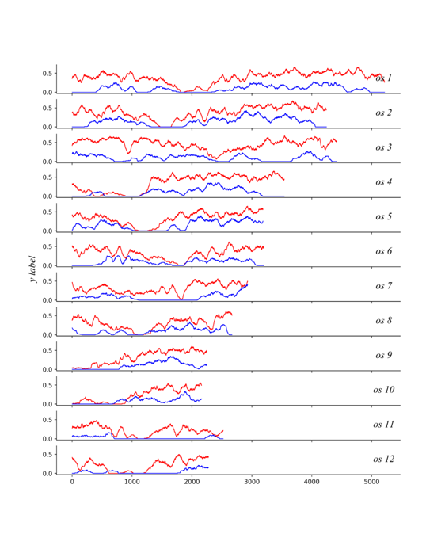

retain¶
Description¶
retain is…………….
Parameters¶
Use cmd to enter the folder wgdi -r? > retain.conf Take out the parameter file.
- alignment = alignment file
alignment is
- gff = gff file
gff is
- colors = red,blue,green
colors is
- refgenome = shorthand
refgenome is
- figsize = 10,12
figsize is
- step = 50
step is
- ylabel = y label
ylabel is
- savefile = retain file (result)
savefile is
- figurefile = result(.png,.pdf)
figurefile is
Modify¶
Modify the parameters that are right for you to run
Example¶
Begin¶
Use wgdi -r retain.conf to run the parameter file and output the results you want.